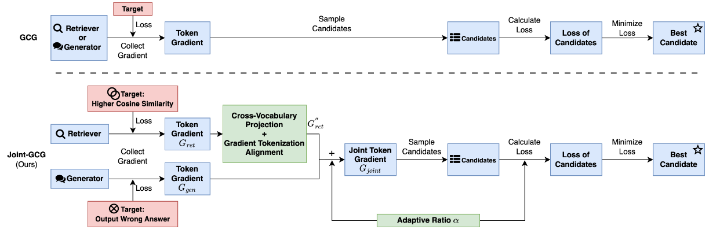

Joint-GCG：针对检索增强生成系统的统一基于梯度的中毒攻击
Joint-GCG：针对检索增强生成系统的统一基于梯度的中毒攻击
Based Information
| 类型 | 篇名 | 关键字 | 作者 | 年份 | 链接 |
|---|---|---|---|---|---|
| 将检索器和生成器联合起来进行攻击; | Joint-GCG: Unified Gradient-Based Poisoning Attacks on Retrieval-Augmented Generation Systems | RAG; Gradient-Based; Attacks; |
Haowei Wang, Rupeng Zhang…… | 2025/06/06 | https://arxiv.org/abs/2506.06151 |
Important Information
传统攻击方法将检索和生成阶段视为独立优化问题（如 Phantom、LIAR），忽略了两者的协同效应，导致攻击效率低下。eg：独立优化检索可能损害生成阶段的语言质量，反之亦然。
Contributions
提出首个统一梯度优化框架 Joint-GCG，通过同步优化检索器和生成器的梯度与损失，实现高效协同攻击。
Method

主要由三部分组成：
跨词投影（CVP）
- 问题：检索器与生成器的词汇表和嵌入空间不匹配，导致梯度无法直接对齐。
- 方案：使用自动编码器（Autoencoder）学习共享词汇的嵌入映射，将检索器的梯度投影到生成器的词汇空间。通过最小化重构损失和对齐损失，实现跨模型的语义对齐。
梯度分词对齐（GTA）
- 问题：不同分词器导致 token 级梯度信号不匹配（如检索器按字符分词，生成器按子词分词）。
- 方案：以字符级梯度为中介，将检索器的 token 梯度分解为字符级梯度，再平均映射到生成器的 token 空间，实现细粒度的梯度同步。
自适应加权融合（AWF）
- 问题：检索和生成阶段的优化目标需动态平衡（如高检索排名 vs. 强生成误导）。
- 方案：引入稳定性指标 $D_{stability}$，基于检索结果的相似度分数差异，通过 Sigmoid 函数动态调整梯度融合权重 α，优先提升高排名文档的生成影响力。
PS (2025/06/17)
具体细节还需再看~（doubao